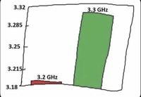
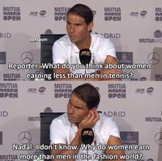

0




NASA has officially ended the MAVEN mission after the Mars orbiter stopped responding in December, apparently after an unexpected spin drained its batteries and knocked out communications. Launched in 2013 and orbiting Mars since 2014, MAVEN spent more than a decade studying how the planet lost its atmosphere and helped explain how Mars transformed from a potentially habitable world into the cold, dry planet seen today. The New York Times reports: The NASA spacecraft MAVEN, short for Mars Atmosphere and Volatile Evolution, had been orbiting around the Red Planet since 2014. NASA last received a signal from MAVEN on Dec. 6, shortly before the spacecraft passed behind Mars. Then the spacecraft stopped responding. A review board found that MAVEN began unexpectedly rotating, causing its batteries to drain too quickly and resulting in a loss of power to the communications system.
"The team is certainly broken up about this," said Shannon Curry, the principal investigator of the mission and a scientist at the University of Colorado Boulder, at a news conference on Wednesday. "But at the same time, we are incredibly proud of the science we've accomplished over the last decade." NASA officials declined to speculate on the root cause of the mishap. A final report is expected to be released later this year.
Read more of this story at Slashdot.
Ancient Slashdot reader whitroth shares a report from Politico, with the caption: "shutting down Microsoft Office for the International Criminal Court (ICC) was clearly a wake-up call." From the report: The EU is moving to counter American dominance in technology by reaching for one of the oldest tools in its arsenal: industrial strategy. As the European Commission unveiled a plan Wednesday to reduce Europe's reliance on the foreign technology providers that underpin the modern economy, it was careful to stress that it was not picking a fight with U.S. digital giants. Instead, the tech sovereignty package -- motivated in no small part by U.S. President Donald Trump's weaponization of Europe's dependence on American firms -- takes a longer-term view: boost the continent's players so they can eventually challenge their U.S. rivals.
[...] If adopted, the package will direct public money toward products that contribute to Europe's economy and independence from foreign firms; cut red tape for data centers; beef up research and innovation through "leadership initiatives"; incentivize countries to share digital capacities in a new "Eurocloud" forum; and require EU governments to come up with national strategies to boost the adoption of cutting-edge tech, including AI. The package will also seek to ramp up the bloc's demand for advanced chips -- a response to criticism by the industry -- with a series of industrial initiatives to revise a 2023 chips law.
[...] As part of its proposal to keep a list of trustworthy countries, the Commission would require EU governments to run a so-called "sovereignty risk assessment" for every digital service they rely on, measuring foreign control, potential access to sensitive data and the risk of operational disruption. Within a year, they would have to determine the appropriate level of protection for each public sector and procure digital services accordingly -- unless they can prove doing so would come at a "disproportionate cost," the proposal reads. However, the Commission reserves the right to overrule their assessment in future legislation if it believes they downplayed the risks. The Commission estimated that just one percent of Europe's public services are so sensitive that they would be required under the proposed certification scheme to rely on the strict level that totally excludes foreign technology. "We cannot afford to depend on others for the technologies that keep our hospitals running, our energy grids stable and our services secure," Commission President Ursula von der Leyen said in a statement. "This is about protecting our citizens, defending our interests and making our own choices."
Read more of this story at Slashdot.
According to supply chain analyst Ming-Chi Kuo, Apple has reportedly doubled 2026 MacBook Neo production from 5 million to 10 million units after stronger-than-expected demand for its $599 budget laptop. MacRumors reports: On an earnings call in late April, Apple's CEO Tim Cook said that customer response to the MacBook Neo was "off the charts," and the popularity of the laptop has reportedly led the company to significantly boost production. [...] Apple was very optimistic about the MacBook Neo before announcing it, but the company still "undercalled" the level of enthusiasm that the laptop would generate, according to Cook. He said that MacBook Neo demand exceeded Apple's expectations and helped to drive a record number of first-time Mac buyers last quarter.
New figures from market research firm IDC support Apple's claim that the MacBook Neo is selling well, and the Windows PC industry has taken notice. For example, Dell recently introduced a redesigned XPS 13 laptop from $699 and said it has features "you won't find on a MacBook Neo," such as a touch screen and a backlit keyboard. "Apple's MacBook Neo is a capable machine, and its arrival confirms that there's real appetite for premium quality at accessible prices," admitted Dell.
Read more of this story at Slashdot.
Google has launched Gemma 4 12B, a 12-billion-parameter open AI model designed to run locally on your laptop without depending entirely on cloud infrastructure. WION reports: According to Google, the new model delivers performance close to much larger AI systems while requiring significantly less memory. The company says Gemma 4 12B can run locally on devices equipped with just 16GB of VRAM, making advanced AI more accessible to developers, researchers and businesses. The launch highlights a growing trend across the AI industry: bringing powerful AI models directly to personal computers instead of relying solely on remote data centers.
Gemma is Google's family of open AI models built using technology and research from its Gemini program. The new Gemma 4 12B model contains 12 billion parameters and has been designed to handle multiple types of information, including text, images and audio. Unlike traditional AI systems that focus only on text, Gemma 4 12B can understand visual content, process audio inputs and perform advanced reasoning tasks. This makes it suitable for a wider range of applications, from software development and content creation to research and automation. Google says the model is available under the Apache 2.0 licence, allowing developers and organizations to use, modify and deploy it with relatively few restrictions.
[...] One of the most significant technical changes in Gemma 4 12B is its new unified architecture. Traditionally, multimodal AI systems use separate components known as encoders to process images, audio and text before combining the information. Google says Gemma 4 12B removes the need for separate multimodal encoders. Instead, the model processes different types of information through a unified architecture. According to the company, this helps improve efficiency while reducing memory requirements and computational overhead. The result is a model that can deliver advanced multimodal capabilities while remaining small enough to run locally on modern hardware.
Read more of this story at Slashdot.
An anonymous reader quotes a report from Ars Technica: Microsoft's Build developer conference kicked off today, and as with almost everything the company has done in the last few years, Microsoft's opening keynote focused overwhelmingly on AI and other closely related technologies. [...] On the hardware front, we didn't get any updates for existing Surface devices (not counting yesterday's Surface Laptop Ultra announcement), but we did get something new: the Surface RTX Spark Dev Box is "a compact developer PC" built around Nvidia's new RTX Spark chip with up to 128GB of built-in memory. The Dev Box looks a little like a cartoon anvil or piano fell onto an Xbox Series X and flattened it. Its aluminum casing was designed "to double as a heatsink," and its preloaded version of Windows 11 Pro will include a "purposeful" set of developer-centric default settings and preinstalled tools.
This is a follow-up of sorts to the Windows Dev Kit 2023, also known as "Project Volterra." This Qualcomm Snapdragon 8cx Gen 3-powered PC was essentially the system board from a Surface Pro tablet stuffed into a plastic box, and it was introduced alongside Arm-native versions of several Microsoft developer tools. It helped to set the stage for the Arm-based flagship Surface devices that launched the next year, which benefitted from a better and faster x86-to-Arm code translation technology called Prism and a greater number of Arm-native third-party apps that didn't need to be translated in the first place. Microsoft didn't announce pricing or specific specs for the RTX Spark Dev Box, but you can probably expect it to cost quite a bit more than the $600 that Project Volterra did. Hopefully, Microsoft can keep the price at least somewhat lower than the $4,699 asking price for Nvidia's similarly specced DGX Spark box.
On the software side, several developer-centric changes are coming to Windows 11, particularly for users of the Windows Subsystem for Linux (WSL). Microsoft is introducing a Windows-native version of the coreutils command line tools, so that commands or scripts made for Linux work within Windows and the other way around; the ability to run WSL inside of containers, said to be arriving in "the coming months"; and something called Windows Developer Configurations that uses the WinGet tool to quickly set up "a distraction-free dev environment with VS Code, GitHub Copilot, WSL, PowerShell 7 and developer-optimized settings with one command on any Windows 11 device." Microsoft also introduced Microsoft Execution Containers (MXC), as "enterprise-grade sandboxed environments" that let AI agents like OpenClaw operate on Windows without getting unrestricted access to the whole system. In theory, MXC could let organizations enforce agent-specific limits, such as blocking access to personal accounts, separating work and personal data, or requiring permission before deleting files.
The MXC GitHub repo also notes support for "multiple containment backends," meaning the same sandboxing concept could apply beyond AI agents to other plugins, tools, and workloads.
Further reading: Microsoft Unveils Scout, an Autonomous AI Agent Built On OpenClaw
Read more of this story at Slashdot.
Meta is scaling back parts of its employee tracking initiative after staff objected to software that collected mouse movements, clicks, keystrokes, and other actions for AI training data. According to Reuters, the company will now let workers pause collection for up to 30 minutes and request exemptions. Reuters reports: [Stephane Kasriel, a vice president in Meta's AI model-building Superintelligence Labs unit] said the team behind the software had also introduced "several optimizations" to reduce its impact on computer battery life, after employees complained it was consuming so much data it was causing their home internet usage to spike. "While we remain confident in the privacy protections we put in place at launch, which went through several layers of risk review, we have heard your concerns about personal data on work devices, battery life, and wanting more control over when capturing happens," Kasriel said in the memo.
Read more of this story at Slashdot.
fjo3 shares a report from Defense One: A small but growing number of European officials and analysts are saying what four years ago was unthinkable: Ukraine isn't just surviving its grueling war with Russia, it is in some ways thriving and may even be on a path to victory. This isn't yet captured in headlines -- for example, about last weekend's barrage of Russian drones and missiles around Ukraine -- but in the details, like how some 90 percent were intercepted. Several long-term trends have shifted in Ukraine's favor, and the core reason is its fierce focus on AI and robotics.
In the crucible of war, Ukraine has developed drones and ground robots that can hold territory -- even take it back. Some are fully controlled by humans, like supply robots and medical-evacuation vehicles. But an increasing number are controlled in at least some aspects by dozens of AI products, from guidance packages on aerial drones to decision aids at the highest levels. [...] Just as important as the tech are the new tactics. Given unusual latitude to experiment, Ukrainian fighters began to develop robot-forward infantry concepts, like combined-arms attacks by airborne and ground systems, "more than a year ago. Right now, we're massively starting to implement this," said Davyd Aloian, deputy secretary of the National Security and Defence Council of Ukraine, the coordinating body on domestic and international security, in an interview.
Ukraine and its partners are also steaming ahead on new concepts for highly autonomous defenses against Russian drones, combining ISR sensors and AI to detect and identify enemy drones in less time and with more certainty. "All of the systems are being linked with each other and with people" to create a distributed network with interceptor drones at various locations to be activated when needed, Aloian said. "One day we will have only like 10 guys who are just going to be responsible for approving interception. And it will automatically go direct to the target." The human operators will be dispersed as well. "Everything can be controlled from Kyiv, Lviv, from cities in other countries," he said. "It's not what happened to Ukraine" (referencing Russia's barrage of Shahed drones) that "should scare us in Europe," said Swarmer CEO Serhii Kupriienko. It's how quickly Ukraine's "middling" military evolved to counter Russia's invasion.
"We are behind by literally 10 years or 20 years" in some defense-technology areas, such as satellite imagery, Kupriienko said, and yet his country has climbed a capability curve that just two years ago seemed insurmountable. So could others, he said. "The answer is always AI solutions and integrating the AI into even the daily routine work within the bureaucracy," he said.
"We have evolved since 2022, the industry has and our defense has as well. Right now we are able to provide not only [large quantities of drone] assets but everything what is needed to build out the ecosystem," including parts and production, training, modification, etc. Aloian said.
Read more of this story at Slashdot.
The Trump administration is moving to dismantle the National Science Foundation's $368 million Ocean Observatories Initiative, a network of more than 900 deep-sea instruments used to monitor ocean currents, marine ecosystems, carbon absorption, heat waves, fisheries, coastal flooding, and climate change. The NSF said it would send ships in June to begin the removal of the instruments anchored off Oregon, Washington, Alaska, North Carolina, and an area between Greenland and Iceland known as the Irminger Sea. The New York Times reports: The ocean observation system began operating in 2016 and was expected to continue for 25 years. Jim Edson, a marine meteorologist who led the Ocean Observatories Initiative, called it "the world's most advanced continuously operating ocean observing systems." When it was first proposed, the science foundation said it was important to have a long-term presence at scientifically important sites in the Atlantic and Pacific oceans. Removing the instruments could take 15 months. Seismic instruments positioned around an active underwater volcano off Oregon will continue operating until 2028.
Each observation station consists of several moorings that secure long arrays of devices connected to wires. The devices measure ocean currents as well as chemical and biological conditions from the water's surface down thousands of feet. The instruments were hardened to resist the pressure of the deep ocean, corrosive seawater as well as marine plants and animals that can foul electronics. Remotely controlled robotic vehicles and gliders around the moorings collect and transmit data to research laboratories.
It cost $48 million annually to operate the network. The Trump administration repeatedly tried to shutter it, proposing to cut its funding by 80 percent in both 2025 and again in 2026. Congress pushed back, restoring the money. To try to reduce costs, managers turned off some of the instruments and collected less data, according to a December 2025 presentation about the observatories at the annual meeting of the American Geophysical Union, a nonprofit organization of scientists. Still, the science foundation moved ahead to decommission the observatory network.
Read more of this story at Slashdot.
An anonymous reader quotes a report from GeekWire: A team inside Microsoft has been quietly building a platform for devices that run AI agents instead of apps, based on Android instead of Windows, with two working hardware designs so far, and an initial set of big-name companies lined up to run pilots. The platform, dubbed "Project Solara," is Microsoft's bet that AI will open up entirely new scenarios for computing -- using agents to avoid the constraints of traditional software, and off-the-shelf components to develop new devices quickly and inexpensively. [...] The company unveiled Solara on Tuesday at its Build conference in San Francisco, describing it as a new platform that spans from chip to cloud. GeekWire got a behind-the-scenes look at the project during a briefing last week in Redmond, including demos of the first two concept devices based on the platform:
- A desktop hub that sits beside a PC and responds to voice commands, signs users in using facial recognition, and surfaces the day's most pressing items. With a monitor attached, it becomes a full Windows machine running in the cloud.
- A wearable badge that reimagines the standard employee ID card. A fingerprint button wakes an agent in one press; a single tap records and transcribes a conversation; and a built-in camera lets the agent act on what the user sees.
Microsoft says it won't ship these devices itself. Instead, it envisions hardware makers and other industry partners turning the reference designs into implementations of their own, each intended for a specific industry, company, or scenario. For example, in one demo shown by the company, the high-tech badge ran on agents designed for use by a health-care worker, including the ability to scan a patient's QR code, record and transcribe the visit, log vitals, and start a prescription. In another application of the same badge, the built-in camera scanned a brainstorm board with ideas for an office revamp, and made a suggestion: add some plants.
The two devices are a starting point. The bigger opportunity, the company says, is all the tasks and workflows where a PC or phone gets in the way or isn't practical to use. [...] In the coming months, companies including AccuWeather, Best Buy, CVS Health, Levi's, and Target are expected to begin pilots of devices based on the reference designs. The operating system is the Microsoft Device Ecosystem Platform, or MDEP, an enterprise version of Android that Microsoft developed for devices including Teams meeting-room hardware. The company says it chose MDEP over Windows deliberately, to run on smaller, lower-power devices while keeping the management and security features IT departments expect: patch and over-the-air updates, device integrity, Microsoft Defender, Intune, and Entra ID sign-in. While the project is still in the early stages, Microsoft CEO Satya Nadella encouraged the team to show it at Build sooner than the company would normally show its work in public. "That underscores just how competitive and fast-moving the AI world is right now, but it also illustrates the pace that the new technologies are enabling," reports GeekWire.
The report notes that the business model for the platform still needs to be worked out. The devices run on Microsoft's Azure cloud, but beyond that, "the economics are still taking shape."
Qualcomm and MediaTek have been chosen as the first chip partners. "The badge runs on a new Qualcomm wearable chip; the desk hub runs on MediaTek IoT silicon," reports GeekWire. "Both are off-the-shelf, not custom, which is central to how Microsoft plans to keep devices cheap and fast to build."
Read more of this story at Slashdot.
Amazon has reportedly killed its planned new Stargate series despite giving it a series order in 2025. According to Variety, studio executives were worried it would only appeal to longtime fans. ScreenRant reports: Reports of what became Gero's Stargate series started in 2022, after Amazon acquired MGM Studios. Dean Devlin, who co-wrote the 1994 Stargate movie with Emmerich, was another executive producer for the Amazon show, as were Joby Harold and Tory Tunnell via Safehouse Pictures. The project also had Brad Wright and Joe Mallozzi as consulting producers, with both having had extensive history working within the Stargate franchise.
On X, Michael Shanks, who played Daniel Jackson in Stargate SG-1, posted in response to the news that: "Yep. They did that." Mallozzi was resistant to the idea that the series was being geared toward diehard fans: "Nope. No. Sorry. Gonna have to push back on this. We were ever mindful of creating a show that would have broad appeal." In an additional post, Mallozzi went into further detail about why the cancellation is so disappointing:
Before the new series was canceled by Amazon, Stargate began with Emmerich and Devlin's movie starring Kurt Russell and James Spader. This paved the way for 10 seasons of Stargate SG-1, followed by five seasons of Stargate Atlantis. There has also been the two-season Stargate Universe, the one-season animated show Stargate Infinity, the web miniseries Stargate Origins, and the 2008 direct-to-video movies Stargate: The Ark of Truth and Stargate Continuum, along with numerous games.
Read more of this story at Slashdot.
An anonymous reader quotes a report from 404 Media: The secondary market for decades old, low-tech John Deere tractors has been booming for years as farmers have sought reliable tractors that they can actually fix without having to deal with John Deere's repair monopoly. A Canadian company has seen that demand and came up with a radical thought: What if they made a new, repairable, "no-tech" tractor to solve what has become a gigantic pain point for farmers? Alberta's Ursa Ag says that it has been inundated with demand after announcing its tractor, which costs roughly half as much as a Deere and has the benefit of not being a repair nightmare.
[...] Ursa Ag markets its tractors as "no frills" and "built to last." Ursa Ag's Doug Wilson told me that the company designed the tractor because of a need in the marketplace for a new machine that isn't loaded with tech and is easy to maintain. The company follows in the footsteps of consumer electronics companies like Fairphone, which makes a repairable smartphone and Framework, which makes modular, repairable laptops. The demand Ursa Ag has seen is part of the backlash to manufacturer repair monopolies and the injection of technology and internet-connected sensors and terms of use into even the most basic of gadgets. "I talk to farmers every day and I hear from farmers every day about how they went out and bought machinery from 1987 so that it wouldn't have a computer on it," Wilson said. "All of this came from a simple discussion with a customer who wanted to be able to turn [the tractor] on at the start of the day, to use it, and shut it off at the end of the day. It needed to work, so that's what we built."
Ursa Ag's tractor has been hyped in agriculture circles after Wilson showed the tractor off at a Canadian farm show and it was featured by Farms.com. Wilson said more than a thousand farmers have contacted him after that show, from roughly 30 countries. "I got a handwritten letter from a farmer in France who doesn't own a computer and wanted us to mail him information about the tractors," he said. He said the company has thus far made a couple fewer than 100 tractors but is working on tripling its production capacity and has seen a lot of demand over the last few months. "Given the number of my customers that carry flip phones, I would say there is consumer pressure to back away from some of the technology that is unnecessary to perform everyday tasks," Wilson said. "So that is definitely transferable to dishwashers and washing machines, refrigerators. Refrigerators that have screens on them that'll tell you what's inside. It's a little crazy."
"That high-tech stuff, the million-dollar John Deere tractor has a place. It has technology that is well worth the money," Wilson said. "But that technology is needed for 5 percent of what a farm does. There are so many applications for tractors on farms that don't require technology. The technology that goes into even a calculator is not required for most farming applications."
Read more of this story at Slashdot.
BrianFagioli writes: Fedora Linux 43 users upgrading to the latest Dovecot mail server discovered something rather unsettling: some older Microsoft Outlook configurations may have been silently ignoring SSL/TLS settings for POP3 email connections for years. According to a Fedora community blog post, affected Outlook clients reportedly continued using insecure port 110 connections even when encryption was enabled in the application settings. The issue surfaced after Dovecot 2.4 disabled plaintext authentication on non secure connections by default, causing Outlook users to suddenly lose mailbox access after the Fedora 43 upgrade.
The report suggests the behavior may date back as far as Outlook 2007, although modern Outlook builds were not fully tested. Fedora admins stress that the problem could be limited to legacy account configurations rather than current versions of Outlook itself. Still, the discovery has sparked discussion among Linux admins and security folks because many users likely assumed their email traffic was encrypted simply because Outlook claimed SSL/TLS was enabled. The incident also highlights how stricter defaults in modern open source infrastructure can expose ancient assumptions and questionable behaviors that quietly survived for decades.
Read more of this story at Slashdot.
Google has released (PDF) technical specs and 2D CAD drawings for the Fitbit Air to encourage users to make their own accessories. "These CAD drawings include crucial mating dimensions, tolerances, and mating force specifications -- including attach and detach force -- to help you build a high-quality accessory band," Google says on a store page listing. 9to5Google reports: Noting how the "community has already come up with innovative and creative new ideas to make the Fitbit Air [their] own" since launch last month, Google is "officially releasing the hardware specifications and accessory design guidelines for the Fitbit Air tracker to the public." For example, owners have already found their own bicep band solutions. This information would typically just be available for third-party accessory companies, but Google wants to open things up to "independent designers and artisan makers." The Google Store page also lists other things developers should keep in mind, such as sensor clearance, sensor pressure, secure retention, and skin-friendly materials.
Read more of this story at Slashdot.
Microsoft says its new Majorana 2 quantum chip is 1,000 times more reliable than its predecessor, with qubits lasting about 20 seconds instead of milliseconds, and claims it could have a commercially useful quantum machine by 2029. The BBC reports: "We will have a quantum machine in 2029 that can solve commercially viable, reasonable problems," said Zulfi Alam, corporate vice president of Microsoft Quantum. That would still require huge further advances as such a device would require millions of qubits - the current chip, Alam said, has 12. Assessing the firm's claims are difficult because it does not release the full details of what it has discovered publicly, citing commercial confidentiality.
Microsoft has spent 20 years pursuing an approach to quantum computing known as "topological." The firm's approach to this is based on exploiting the properties of a so-called quasi-particle, which had existed only in theory, since it was first predicted in the 1930s by Italian physicist Ettore Majorana. To do this it had to exploit a novel state of matter - different from the three familiar states of liquid, solid or gas.
Paul Stevenson, a physics professor at the University of Surrey, said the tech giant's timeline sounded plausible - if its research lived up to its claims. "Microsoft appears to have made a leap in their attempt to produce viable topological qubits," he said. "If they succeed, they will leap from being a player with no production quantum computer, to being a serious player in the race to make the next generation of fault-tolerant machines."
Read more of this story at Slashdot.
An anonymous reader quotes a report from 9to5Google: Phone by Google wants to combat the "growing threat of impersonation scams" and protect Android users against "sophisticated, AI-powered deepfake attacks" with fake call detection. [...] Fake call detection requires that both parties are on Android and use the Phone by Google app, while Google Messages and Google Contacts also have to be installed. When a contact calls, their phone "sends a silent confirmation signal in real time to your device to verify the call is legitimate and truly coming from the contact's device."
This digital handshake uses end-to-end encrypted RCS (Rich Communication Services). If you're being scammed by an impersonator, your phone will notice that the "initial confirmation signal will be missing," and ping the contact's real device to double-check. If their real device says, "I'm not making a call right now," you'll get a warning on your screen advising you to hang up immediately. This feature will be available globally on Android 12+ phones starting with Pixel devices this month. Fake call detection is enabled by default but can be turned off at any time. Google says it's "possible for other apps and device manufacturers to adopt this technology" given the RCS underpinnings. You can learn more about fake call detection in Google's blog post.
Read more of this story at Slashdot.
Financial Times : Public First: 26% of Americans support increased data center construction, the lowest share among 15 large countries, such as Brazil, Japan, the UK, and Canada — Americans are far more likely to oppose the construction of AI data centres than citizens of other big economies …
Dina Bass / Bloomberg : Robotics startup Generalist, which released its GEN-1 model to complete short physical tasks in April, raised $400M led by Radical Ventures at a $2B valuation — The company raised $400 million in a funding round led by Radical Ventures — Generalist AI, a robotics startup …
Mike Butcher / Pathfounders : London- and NY-based Airspeed, which aims to use AI agents to replace sales software like traditional CRM dashboards, raised a $20M Series A led by DN Capital — Airspeed, the London and New York-based agentic AI startup formerly known as Glyphic, has raised a $20 million Series A to build what it calls the …
Ben Thompson / Stratechery : Q&A with Satya Nadella on Microsoft's competitive position, MAI models, OpenAI, the software business, GitHub Copilot, Project Solara, data centers, and more — An interview with Microsoft CEO Satya Nadella about figuring out Microsoft's role in AI, the relationship with OpenAI, Capex …
Emily Birnbaum / Bloomberg : Sam Altman says he has no plans to put money into the 2026 US midterms; OpenAI has tried to distance itself from the Greg Brockman-backed Leading the Future PAC — OpenAI Chief Executive Officer Sam Altman says he has no plans to make any financial contributions toward this year's US elections …
Aisha S Gani / Bloomberg : Revolut co-founder and CTO Vlad Yatsenko plans to step down in July, to be replaced by Head of Technology Donato Lucia; Yatsenko was Revolut's first employee — Revolut Ltd.'s chief technology officer, Vlad Yatsenko, and Chief Executive Officer Nik Storonsky's early partner …
Steven Levy / Wired : Flourish, which is building Cortex AI, a brain-like synthetic intelligence system that uses less power than LLMs, raised $500M, including $100M from Jeff Bezos — With $500 million in funding and a reported $2.5 billion valuation, Flourish wants to reinvent AI by putting real neurons under the microscope.
Julia Fanzeres / Bloomberg : Challenger: US tech companies announced cuts to 38,242 jobs in May, the most since August 2024, taking 2026's total so far to 123,653 cuts, up 65%+ YoY — US technology companies in May announced the most job cuts in nearly two years as they ramp up spending on artificial intelligence.
Robert Hart / The Verge : Amazon unveils its next-gen Proteus warehouse robot, adding AI-powered language capabilities that let workers assign it tasks, rolling out in Europe in H1 2027 — The company insists its robot investments are designed to support, not replace, warehouse workers.
Bloomberg : Corporate spending management platform Ramp raised $750M at a $44B valuation led by Iconiq, Singapore's GIC, and the OTPP, taking its total funding to $3B — Ramp, a corporate spending management platform, has raised $750 million in a new funding round at a $44 billion valuation …
Sarah White / Financial Times : France secured €110B+ of proposed AI and data center investments this week, amounting to ~10 GW of new computing capacity, equivalent to ~10 nuclear reactors — Investors warn approvals and local opposition could slow France's massive data centre build-out
Wen-Yee Lee / Reuters : Foxconn says it will work with Intel to jointly develop and deploy next-gen AI infrastructure, including server racks with Intel Xeon processors and AI chips — Foxconn (2317.TW) said on Thursday it will work with U.S. chipmaker Intel (INTC.O) to jointly develop and deploy next-generation AI infrastructure …
Debby Wu / Bloomberg : TSMC CEO C.C. Wei says the company won't be able to fulfill the demand led by US customers even as more capacity comes online in the US over the next few years — Taiwan Semiconductor Manufacturing Co.'s global chip supply will fall short of AI-fueled demand for years to come …
Ted Chiang / The Atlantic : A look at AI consciousness debates; LLM conversations are cleverly disguised examples of sentence continuation, but that doesn't deny how impressive LLMs can be — Anthropic is regarded as a giant among AI companies, but perhaps what it really excels in is anthropomorphism.
Daniel Nishball / SemiAnalysis : A deep dive into the case for data centers in space, as SpaceX prepares to go public: Elon Musk's claims, the wider debate, power supply issues, costs, and more — Space DC Total Cost of Ownership Explained. Unpacking constraints from Terrestrial DCs and Chip Production.